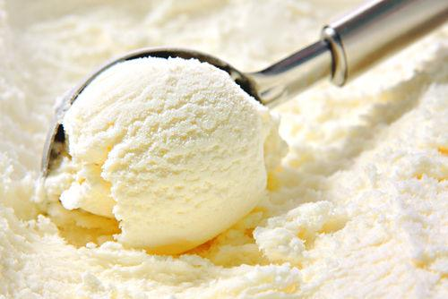

Good Source of Energy – Contains carbohydrates and fats that provide quick energy.
Contains Calcium – Milk-based ice cream can help support strong bones and teeth.
Improves Mood – Many people enjoy ice cream as a comfort food, which can make them feel happier.
Variety of Flavors – Available in many flavors and styles to suit different tastes.
Cooling Treat – Especially enjoyable during hot weather.

High Sugar Content – Excessive consumption may contribute to weight gain and dental problems.
High Calories – Eating too much can increase calorie intake significantly.
May Contain Saturated Fat – Some ice creams contain high levels of saturated fat.
Not Suitable for Everyone – People with lactose intolerance may experience digestive discomfort.
Can Affect Blood Sugar Levels – People with diabetes should consume it carefully.
Ice cream can be a tasty treat and provide some nutrients like calcium, but it is best enjoyed in moderation because of its sugar and calorie content. 🍦